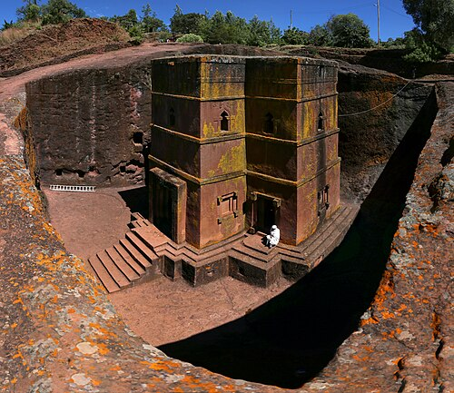
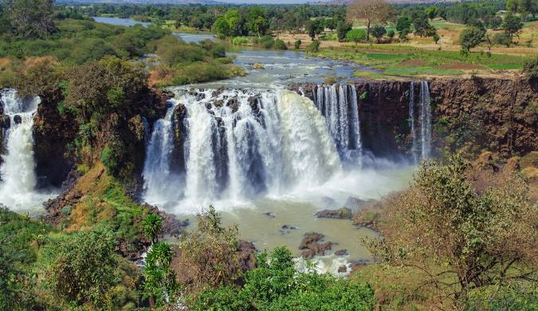
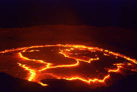

Top Eco-Friendly Destinations in Ethiopia

Lalibela
Discover the rock-hewn churches of Lalibela, a UNESCO World Heritage Site.

Blue Nile Falls
Marvel at the majestic Blue Nile Falls, also known as 'Tis Issat' – the Water that Smokes.

Erta Ale Volcano
Witness the lava lake of Erta Ale, one of the few continuously active volcanoes on Earth.